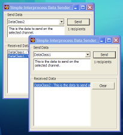

WM_COPYDATA Demo (62K)
WM_COPYDATA Demo (62K)
 10 Nov 2003
10 Nov 2003
First Posted

Simple Interprocess Communications using WM_COPYDATA
Whilst the .NET Framework has some very sophisticated techniques for communication between processes on different machines, it doesn't provide so much support for communication between processes on the same machine. The Windows API offers a rich set of inter-process communications features, at various levels of sophistication. This sample demonstrates using one of the simplest techniques, the WM_COPYDATA message. VB.NET and C# code provided.
WM_COPYDATA
The WM_COPYDATA message in the Windows API is specifically designed to make it easier to send a block of data between two applications in different processes. Each process running on a Windows System has its own virtual address space which means that different processes see completely different data even if it has the same memory address. WM_COPYDATA runs at a lower level in the system and is hence capable of copying memory between process address spaces. When you call it, it allocates a new block of memory in the recipients address space, copies the data you provided it into the new block and then notifies the recipient application, which can then read the memory. Windows does not allow the recipient application to change the received structure (even if you did the change would be local to the recipient and not seen back at the caller).
This makes it a useful message for sending data between applications and directing other applications to perform work. However, it requires cooperation between the sending application and the receiving application. The receiving application must know the format of the information. The sending application must know the format of the data and cannot modify the memory referenced by any pointers. The data must also be entirely contained in the block that's being sent: you cannot send a reference to another object, for example, since the recipient would simply recieve a long memory pointer which would not point to anything useful in its address space.
Using WM_COPYDATA
In this section I'll look at two things; firstly, how to place an object (which may refer to other objects) into a memory block for sending and secondly how the sender can identify the recipient.
Writing an Object into a Memory Block
The .NET Framework includes a lot of support for Serialization. When you serialize an object, you convert it to a form that can be persisted to some other location, from where it can be read again (deserialized) to reconstitute and object that contains the same information as the original. This provides an easy way to convert any object into a block of memory which you can pass around.
There are two ways to go about serialization:
- Marking the class with the Serializable attribute.
Once you've done this, the .NET Framework will automatically provide a serialization/ deserialization implementation which acts on the public fields within the object. This is nice and simple but the implementation doesn't call the object's constructor, and if your object contains private fields or read-only properties then it is unsuitable. Note that this attribute is not inherited if you create a subclass of the object.
- Implement the ISerializable interface.
If you need more control, you can implement ISerializable. To do this means implementing a method for serializing, GetObjectData, and providing a special constructor for deserializing with the same arguments as GetObjectData. In each case you get a SerializationInfo object which allows you to Add and Get values from the serialized buffer.
Once an object supports serialization, it can be written to a block of memory using a MemoryStream:
BinaryFormatter b = new BinaryFormatter(); MemoryStream stream = new MemoryStream(); b.Serialize(stream, obj); stream.Flush();
To actually get that memory into a form that you can use with Interop you need to copy its contents to a block of memory, so you can then get a pointer from it:
int dataSize = stream.Length; byte[] data = new byte[dataSize]; stream.Seek(0, SeekOrigin.Begin); stream.Read(data, 0, dataSize); IntPtr ptrData = Marshal.AllocCoTaskMem(dataSize); Marshal.Copy(data, 0, ptrData, dataSize); ... use it here // Clear up the data: Marshal.FreeCoTaskMem(ptrData);
Identifying Recipients
Before you send any data, you need to be able to identify who you're sending it to. In the case of a WM_COPYDATA message, that means knowing the Window handle of the object that receives the message.
Whenever you're sending information between processes, there are various ways to allow processes to know about each other. You can use a known file, or a known location in the registry to identify objects. However, since you are responsible for writing to the known location when your object is created, and clearing the information again when the object is destroyed, this can lead to problems if there is a crash. A much more reliable way is if you can detect recipients on the basis of their Window, since when the Window is destroyed it automatically gets removed from the recipients list.
To do this you can use the Windows Properties database. Any Window can be marked with a named property using the API SetProp call, and a Window can be queried for a property with a particular name using GetProp
Therefore to identify recipients all you need to be able to do is to enumerate the Windows on the system, and check the properties. The article Enumerating Windows describes how to go through all the windows on the system, so for each Window that is returned you just need to check for the property:
[DllImport("user32", CharSet=CharSet.Auto)]
private extern static int GetProp(
IntPtr hwnd ,
string lpString);
[DllImport("user32", CharSet=CharSet.Auto)]
private extern static int SetProp(
IntPtr hwnd ,
string lpString,
int hData);
[DllImport("user32", CharSet=CharSet.Auto)]
private extern static int RemoveProp(
IntPtr hwnd,
string lpString);
// Enumerate all windows which have the
// channel name, send the data to each one
EnumWindows ew = new EnumWindows();
ew.GetWindows();
// Send the data to each window identified on
// the channel:
foreach(EnumWindowsItem window in ew.Items)
{
if (!window.Handle.Equals(this.owner.Handle))
{
if (GetProp(window.Handle, this.channelName) != 0)
{
...
}
}
}
Wrapping it up: Using the Code
The sample code provides a CopyData class which brings together the techniques and wraps up sending and receiving data between applications. To use it, you create an instance of the CopyData class, and connect up the DataReceived event. You then attach the class to an instance of a Form using the AssignHandle method and create some "channels" to send and receive data on. A "channel" is a convenience: if you need to send multiple different types of data life is easier if you can easily determine which type you've received. By setting up different channels for different types, on receipt of the data you can check which channel it was sent on. If you only ever send one type of data you just create a single channel. Once you've done that, you can send data to any recipient using a particular channel using the Send method. Here's an overview of the setup for a single channel:
private CopyData copyData = null;
private void frm_Load(object sender, System.EventArgs e)
{
// Create a new instance of the class:
copyData = new CopyData();
// Assign the handle:
copyData.AssignHandle(this.Handle);
// Create the channel to send on:
copyData.Channels.Add("MyDataChannel");
// Hook up received event:
copyData.DataReceived += new DataReceivedEventHandler(
copyData_DataReceived);
}
private void copyData_DataReceived(object sender, DataReceivedEventArgs e)
{
// Cast the data to the type of object we sent:
MyObject m = (MyObject) e.Data
// .. do something with the data.
}
private void SendData(MyObject m)
{
// m must be serializable.
int recipients = copyData.Channels["MyDataChannel"].Send(data);
}
Using The Framework - Remoting between applications on the same machine
If you have ever delved briefly into .NET Remoting you will have seen that this is the .NET Framework's version of DCOM, albeit much more controllable, particularly around which ports communication will be on. Surely this can be used to communicate between applications on the same machine?
The answer is that it can. However, there are two difficulties; firstly you need to be able to perform TCP/IP communications; on local host port (127.0.0.1) which probably requires that the machine you are running on has a network card installed and secondly it can be difficult to identify the remoting target. If you're interested in doing it, though, the article Real World Applications Sample Part 1 describes the steps involved in communication. It uses the registry as the shared place to store the name of the proxy object which can be accessed from different instances. The steps are basically:
1. Recipient Application
- Create an instance of a class derived from MarshalByRefObject.
- Call RemotingServices.Marshal to publish the object.
- Create a TcpChannel and configure it to bind to localhost on port 0.
- Get the name of the object back from TcpChannel and put it somewhere that another application will be able to access it from, for example, a file or to the registry.
2. Sending Application
- Look in the place you wrote the name of the object to in step 1.4 for the recipient's object name.
- Call RemotingServices.Connect to get a proxy to the object.
Conclusion
This article provides a easy to use wrapper around the WM_COPYDATA class that you can add to any .NET Windows Forms application (with unmanaged code permissions). This allows you to very easily send data between applications.
Examples of places where you can use this sort of messaging include creating a custom TraceListener which sends messages to a Window and synchronizing a Start Page showing recently used documents when you can have multiple instances of your app running (just like VS.NET doesn't!)